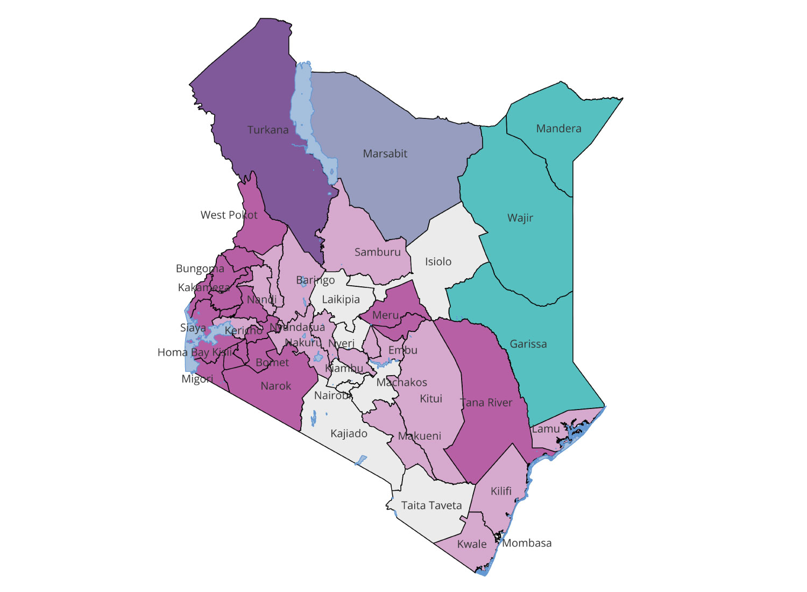

How different factors affect education outcomes in Kenyan counties
Education trends across Kenya by county


<

Garissa, Mandera, Wajir, Marsabit and Turkana have a high rate of people who have never been to school.
West Pokot has the highest dropout rate. Counties such as Garissa, Wajir, Mandera and Marsabit which have among the highest number of people who have never been to school have low drop out rates relative to the rest
In counties with the lowest education acces, people who do go to school are then more likely to finish school
On low drop out rates in areas with lower access to education: It appears the counties with the lowest access to education seem to have lower dropout rates for those who do attend school. Look at Garissa, Wajir, Mandera and Isiolo, for instance. They have drop out rates nearly as low as Kiambu, Mombasa and Nairobi's where access to education is higher. That is, among people who have ever been to school in the counties with low access to education, people were less likely to drop out once they began school than in the counties where education may be more accessible. On the other hand, that means, people in these counties with low education access who have been to school are then more likely to finish school.